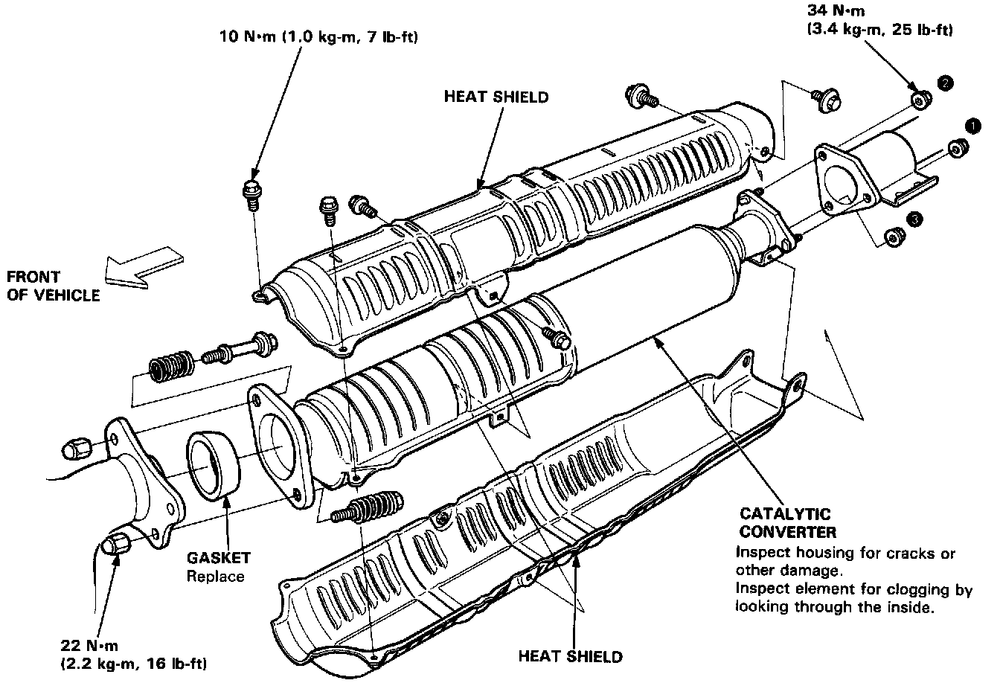

Catalytic Converter: Testing and Inspection

Inspection
If excessive exhaust system back-pressure is suspected, remove the catalytic converter from the car and make a visual check for plugging, melting or cracking of the catalyst. Replace the catalytic converter if any of the visible area is damaged or plugged.